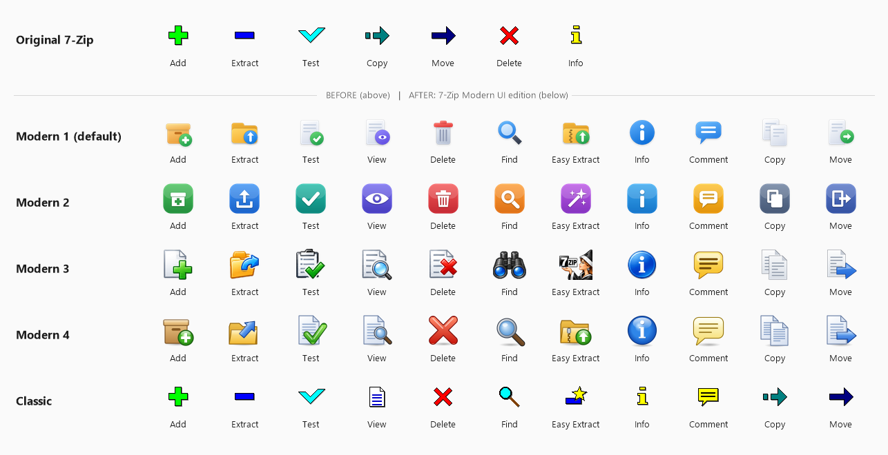

The toolbar shows all buttons in one row, with big icons and labels under them. If the window is too narrow for all buttons, the buttons that don't fit are moved to the » menu at the right end of the toolbar. Click » to open them.
Available buttons:
| Button | Description |
|---|---|
| Add | Add selected files to an archive. |
| Extract | Extract selected archives (Extract dialog box). |
| Test | Test selected archives. |
| View | Open the selected item with the viewer (F3). |
| Delete | Delete selected items. |
| Find | Find files (Ctrl+F). |
| Easy Extract | Extract archives to folders with one click. |
| Info | Show properties of the selected item (Alt+Enter). |
| Comment | Show or edit the comment (Ctrl+Z). |
| Copy To | Copy selected items (F5). |
| Move To | Move selected items (F6). |
By default the toolbar shows Add, Extract, Test, View, Delete, Find, Easy Extract and Info.
You can choose one of 5 icon styles in View > Toolbars, or by right-clicking the toolbar:

The picture in the Easy Extract window follows the selected icon style.
Right-click the toolbar to open the toolbar menu. There you can choose the icon style and open the Customize Toolbar window.
Open it with View > Toolbars > Customize... or from the toolbar menu.
You can also drag buttons with the mouse: between the two lists, and up or down to change the order. The toolbar layout is saved and restored the next time you start 7-Zip.